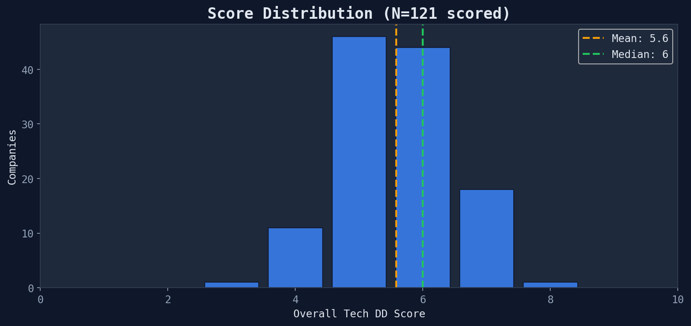
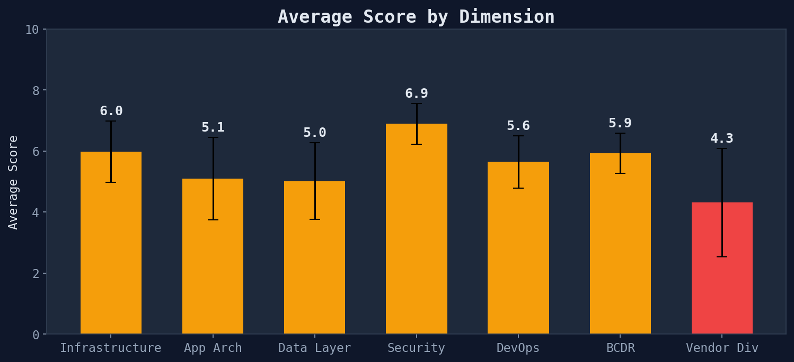
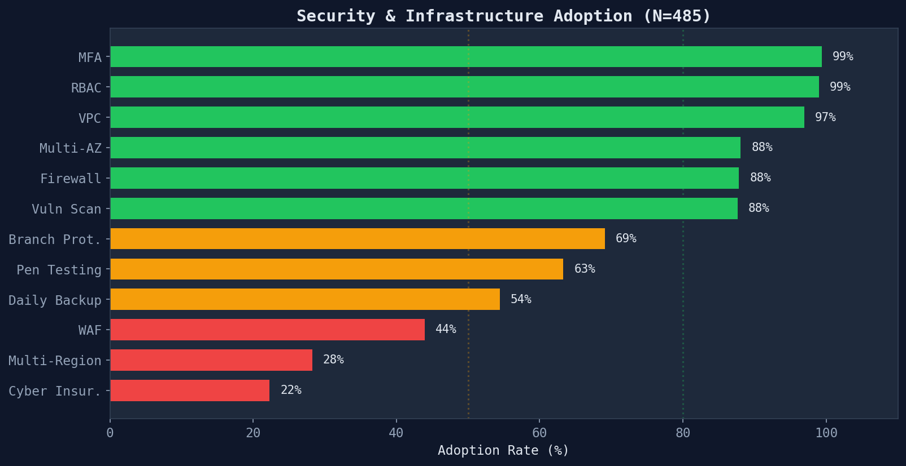
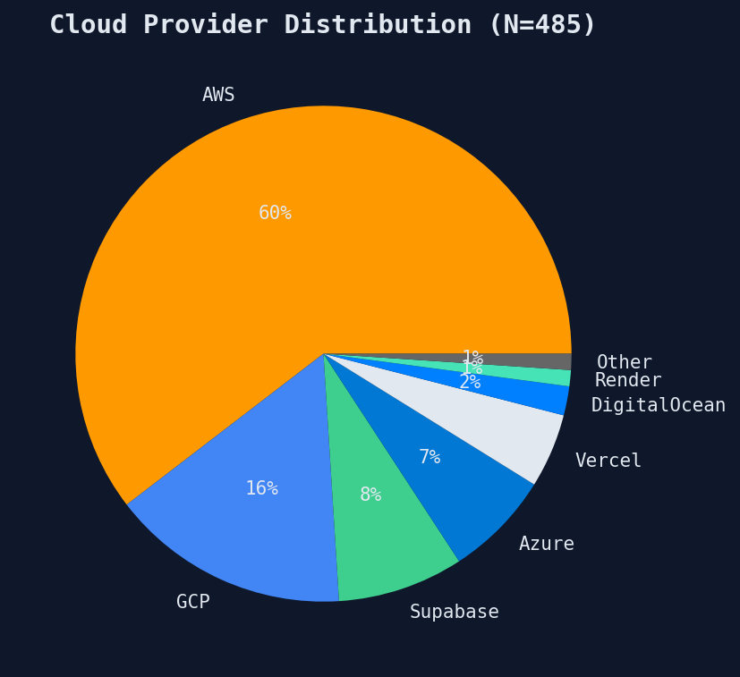

Portfolio-wide summary of 485 SOC 2 compliance reports
Across 121 scored companies, the average tech DD score is 5.6/10 (median: 6). The distribution clusters tightly at 5-6, with 19 companies (16%) scoring 7+ and 12 (10%) scoring 4 or below.

N=121 companies with dimension scores
Security is the strongest dimension (6.9/10) — MFA, RBAC, and basic firewalls are near-universal. Vendor Diversity is the weakest (4.3/10) — most companies depend on a single cloud provider with minimal third-party disclosure.

Error bars show standard deviation
| Dimension | Mean | Median | Std | Min | Max |
|---|---|---|---|---|---|
| Infrastructure | 6.0 | 6 | 1.0 | 3 | 8 |
| App Arch | 5.1 | 5 | 1.4 | 2 | 9 |
| Data Layer | 5.0 | 5 | 1.3 | 3 | 8 |
| Security | 6.9 | 7 | 0.7 | 5 | 9 |
| DevOps | 5.6 | 6 | 0.9 | 4 | 8 |
| BCDR | 5.9 | 6 | 0.7 | 4 | 8 |
| Vendor Div | 4.3 | 4 | 1.8 | 2 | 9 |
The portfolio shows a clear three-tier security maturity pattern:

N=485 companies
AWS dominates at 59%, creating systemic portfolio-level concentration risk. A major AWS outage would simultaneously impact over half the portfolio.

Generated from executive overview module · 485 SOC 2 compliance reports · 2026-03-24